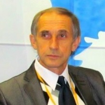

Konfransda Çıxış Edəcək Mütəxəssİslər
Xarici Mütəxəssislər

Prof.Dr. Levent Aydın
Uludağ universiteti Baytarlıq Fakultəsi Parazitoloji Anabilim Dalı, 45ci Apimondiya Kongresi Elmi katibi

Dr.Ali Korkmaz
Kənd Təsərrüfatı Yüksək Muhendisi

Vladimr Malykhn
Professional Arıçı
Ahmet Inci
Kənd Təsərrüfatı Yüksək Muhendisi
Dr. İbrahim Özcan
Kənd Təsərrüfatı Nazirliyi Heyvandarlıq İdarəsinin Müdir Müavini
Ziya Shahin
Türkiyə Arı Yetişdiriciləri Mərkəz Birliyinin Sədri

Faraj Molevi
İran Arıçılar Birliyi Sədri
Prof.Dr. Aleksei Borisovhic
Apisfera Firması
Yerli Mütəxəssislər

Elxan Ələkbərov
Şahdağ-E firması direktoru

Lətif Lətifov
Qinyətoğulları firmasının direktoru

Bədrəddin Həsrətov
Azərbaycan Arıçılar Asossasiyasının Sədri
Dos.Dr Valeh Qədimov
Rüfət Nərimanzadə
Arıçı

Etibar Məmmədov
Arıçılıq kitabının Müəllifi
Könül Ağayev
Apiterapevt
Dr. Elsevər Əsədov
Naxçivan Dövlət Universiteti Kafedra Müdiri
Abdullah Şarapçıyev
Professional Arıçı
Samir Əliyev
İqtisadi Təşəbbüslərə Yardım İctimai Birliyinin departament müdiri